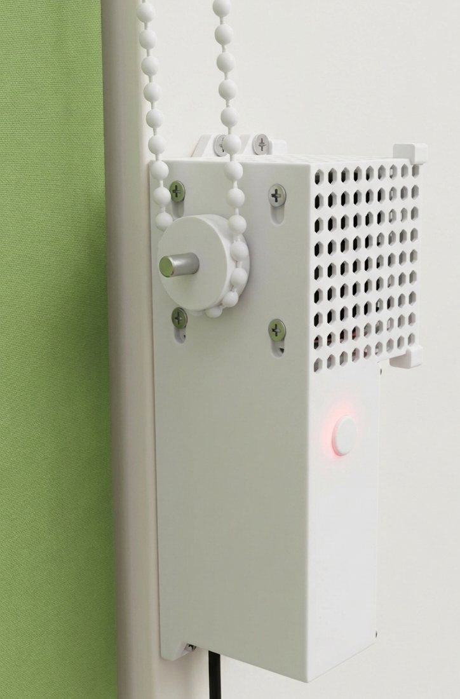
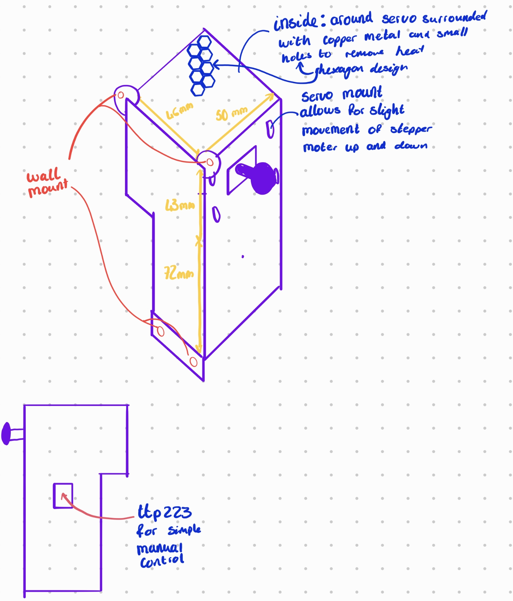

§ 01 · PROJECT
Smart Blinds.
Whisper-quiet precision roller blinds control — stepper-driven, zero rewiring.
Still actively maintained — regularly updated & supported.
An advanced, non-invasive smart blinds controller powered by the ESP32-C6. Featuring a whisper-quiet stepper motor, five built-in local automation modes, and seamless integration with Alexa and Google Home, it automates your existing roller blinds without requiring complex installations or rewiring.

§ 02 · OVERVIEW
Smart blinds that replace the chain.
The controller clips directly onto your existing roller blind chain, eliminating the need to replace your blinds or carry out complex wiring. A near-silent stepper motor drives the chain with millimetre precision, allowing you to set the blinds to any percentage using a companion app, voice commands, or capacitive touch gestures directly on the device.
Under the hood, the system is powered by an ESP32-C6 with Wi-Fi 6 and Bluetooth Low Energy. It runs five fully independent, local automation modes, weather-aware scheduling, and an atomic dual-slot storage system that prevents configuration data corruption — even in the event of a sudden power loss.
§ 03 · SYSTEM ARCHITECTURE
One brain. Everything connected.
The ESP32-C6 serves as the central processor, executing a non-blocking FreeRTOS scheduler to manage step-pulse generation, debounce touch inputs, and run concurrent network tasks. The diagram below illustrates how each physical component and service integrates into the system architecture.
Sensors
MCU
Actuators
Cloud / Net
Data
Wireless
§ 04 · KEY FEATURES
What drives your blinds.
01
Silent Motor Driver
The TMC2209 StealthChop2 driver operates the motor below 29 dB — quieter than a whisper. Precise microstepping and a dedicated pulse-width control pipeline guarantee smooth, near-silent, and highly reliable movement at any time of day.
02
Precise Step Timing
A dedicated 20 kHz hardware timer interrupt service routine handles step generation with microsecond accuracy. This decoupled, high-priority task ensures network traffic and background processing never cause step stuttering.
03
Local Automation Engine
From sunset tracking to heat-protection routines, five independent automation modes execute locally on-chip. Since the logic is stored and processed on-board, your schedules remain fully active during network outages.
04
Responsive Voice Integration
Integrated natively with Alexa and Google Home using secure WebSockets. Voice commands are processed in under 100 ms, with bidirectional status synchronization ensuring smart home dashboards remain perfectly aligned.
05
Fail-Safe Storage
System configuration is stored in redundant EEPROM partitions with automated CRC32 checksum verification. If a power outage interrupts a write transaction, the system automatically restores its state from the backup partition.
06
Target Wake Time (TWT)
Leveraging 802.11ax Target Wake Time (TWT), the ESP32-C6 negotiates precise sleep-wake intervals with the router. This slashes standby power consumption by 70% and significantly reduces thermal build-up inside the enclosure.
§ 05 · INTERNAL LAYOUT
Engineering design overview.

§ 06 · STEPPER MOTOR ENGINE
Precision motion, in perfect silence.
By pairing a silent TMC2209 stepper driver in StealthChop2 mode with a custom C++ step-generation engine, the motor operates below 29 dB. A dedicated FreeRTOS task manages acceleration profiles, ensuring whisper-quiet start-stops and smooth torque delivery.
Timer20kHz
Pulse50µs
Accel8ksteps/s²
ModeSilent
The motion engine calculates real-time trapezoidal speed profiles with acceleration parameters up to 8,000 steps/s². Gradual speed ramping mitigates mechanical inertia, preventing chain shock and reducing gear-wear.
Motor control runs in a dedicated high-priority thread decoupled from network processing. A lock-free ring buffer handles communication between task boundaries, ensuring zero step jitter even during peak Wi-Fi activity.
With a fixed minimum pulse-width of 20 µs, the controller guarantees that the TMC2209 optocoupler stage registers every transition. This ensures precise position tracking without relying on closed-loop encoders.
§ 07 · TOUCH GESTURE FSM
Five states, one sensor.
One capacitive pad does the work of four buttons. A finite-state machine watches the timing of every touch — how long you hold, how quickly you tap again — and resolves it into one of four gestures: tap, double-tap, hold, and long-hold. Each maps to a real action, from toggling the blind to firing an emergency stop, while a 50 ms debounce window rejects the switching noise a stepper driver throws off.
STATE 0 · IDLE
Scanning for touch events
The resting state. On every loop the firmware samples the TTP223's output and passes it through a 50 ms debounce window — a reading only counts as a real touch once it has held steady for the full window. That one rule is what stops switching noise from the stepper driver, or a stray electrical spike, from ever landing as a phantom press.
debounce50 msdigital noise filter
sensorTTP223GPIO 21 · active HIGH
power~µAnegligible idle draw
STATE 1 · PRESSED
Timing the press
Once a touch is confirmed, the machine starts a clock — from here, duration decides everything. Release quickly and control passes to the double-tap window. Hold for 1.5 seconds while the blind is moving and it fires an emergency stop, cutting the stepper instantly and writing the current position to flash. Keep holding to 10 seconds and it clears the saved Wi-Fi credentials — while keeping the travel calibration — so the unit can be re-paired without ever re-learning its limits.
e-stop1.5 s holdwhile motor moving
wifi reset10 s holdpreserves calibration
fallback→ released waiton quick release
STATE 2 · RELEASED WAIT
Double-tap detection window
The instant your finger lifts, a 300 ms timer opens to catch a possible second tap. If that window closes in silence, the machine commits to a single tap: the blind runs to whichever end it isn't already near — opening if it sits mostly closed, closing if it sits mostly open — reading the live position percentage to choose the direction for you.
window300 msdouble-tap timeout
single taptoggle blindsmooth decel ramp
directionautobased on current position %
STATE 3 · SECOND PRESS
Instant direction reverse
Land a second tap before the 300 ms window closes and the machine reads it as a direction reversal. The motion engine ramps the stepper down, flips its direction, and accelerates back up on the same trapezoidal curve — so you can send a half-open blind the other way without waiting for its current run to finish.
actioninstant reverseno full stop needed
safety3 s timeoutauto-exits if held
motorstays enabledkeeps holding torque
STATE 4 · HOLD TRIGGERED
Emergency stop lock
After an emergency stop, the machine parks here on purpose. It refuses to advance until the touch signal physically drops — a hard interlock, so the same long press can't roll straight into another command. While it waits, the stepper driver is disabled to take the strain off the motor, and the stop is pushed over MQTT so the app reflects it in real time.
unlockfinger liftphysical release required
motordriver disabledprevents strain
alarmMQTT publishednotifies dashboard
§ 08 · TOUCH STATE DIAGRAM
Every gesture, every transition.
User event
Timer / timeout
Default state
Safety state
§ 09 · AUTOMATIONS
Set it once. Forget about it.
Five firmware-defined automation modes operate concurrently to maintain optimal indoor environments. By executing logic directly on-chip rather than depending on external servers, the automations remain fully active during network outages.
AUTOMATION 01
Morning Wake Up
TriggerTime-based schedule, per day of the week
SafetyOnly opens upward · tap to cancel anytime
Start your day naturally. This automation gradually opens the blinds over a configurable duration (up to 2 hours) to simulate a natural sunrise. Instead of opening abruptly, the blinds rise in tiny, periodic steps to slowly fill the room with natural light.
Why it's useful: Waking up to gradually increasing natural light helps regulate your circadian rhythm and sleep cycle. Schedules can be customized for each day of the week, and an on-board safety check ensures the blinds only actuate upwards during this wake window.
AUTOMATION 02
Sunset Auto-Close
SourceOpenWeatherMap API · daily refresh
OffsetConfigurable ± minutes from sunset
Automatically closes the blinds at sunset. The controller queries the OpenWeatherMap API daily to retrieve local sunset times, triggering a close event that adapts dynamically as the seasons change.
Why it's useful: Sunset times shift by several minutes each day. This dynamic scheduling adapts automatically, and you can define a custom offset (e.g. sunset + 20 minutes) to fine-tune the exact closing threshold.
AUTOMATION 03
Night Lock
SchedulePer-day time schedule (weekday/weekend)
ActionClose + lock position until next automation
Enforces a scheduled closure and security lock at a specific time each night. Operating on a highly customizable weekly schedule, it overrides standard trigger inputs and maintains a closed state until the morning wake-up routine is activated.
Why it's useful: Maximises privacy and home security. Even if manual touch events, voice commands, or other automation rules attempt to actuate the blinds during night hours, the night lock holds the blinds closed until the designated morning schedule begins.
AUTOMATION 04
No Presence Auto-Close
SourceMQTT presence data from paired devices
StatusPaired with Light Switch M0 (Auto)
Closes the blinds automatically when the room is vacant. The controller listens for occupancy status over MQTT — published by network devices like the smart light switch — and reacts when the room remains unoccupied for a defined duration.
Why it's useful: Reduces solar heat gain during empty hours and provides automatic privacy when you leave. A debounce filter prevents premature actuation if you briefly step out of the room, ensuring the blinds only close when the space is genuinely vacant.
AUTOMATION 05
Heat Protection
SourceOpenWeatherMap outdoor temperature
Safety15-minute cooldown · anti-cycle protection
Automatically closes the blinds when the outside temperature exceeds a configurable threshold, blocking direct sunlight from heating up your room. The controller fetches live weather data from OpenWeatherMap via its REST API, so no additional sensors are needed — just your location.
Why it's useful: In summer, direct sunlight through windows is one of the biggest causes of indoor overheating. By shading windows before the room warms up, you avoid relying on air conditioning entirely — saving energy and keeping the space comfortable. A 15-minute cooldown window prevents the blinds from cycling up and down near the temperature threshold.
§ 10 · HARDWARE & WIRING
Every pin, every rail.
| Component | Model | GPIO | Protocol | Function |
|---|---|---|---|---|
| Motor enable | TMC2209 | GPIO 2 | Digital Out | Active LOW motor enable |
| Step pulse | TMC2209 | GPIO 4 | Timer ISR | 20 kHz step pulse output |
| Direction | TMC2209 | GPIO 5 | Digital Out | Motor direction control |
| Touch sensor | TTP223 | GPIO 21 | Digital In | Capacitive touch · Active HIGH |
| Power Component | Model | Rating | Function |
|---|---|---|---|
| Power Source | USB-C Connector | 5V / 2A Direct | Mains-powered DC input |
| Mains Protection | TVS Diode + Fuse | 5.6V clamp / 2A | Over-voltage and over-current protection |
| LDO Regulator | AMS1117-3.3 | 5V → 3.3V | ESP32-C6 + touch sensor isolated logic rail |
All grounds (USB-C, LDO, ESP32, peripherals) connect to a single, continuous ground plane for noise mitigation.
§ 11 · CONNECTIVITY
Connected — and gracefully offline.
Wi-Fi 6 is the primary path. If it fails, BLE provisioning and rescue mode keep the device accessible. Dual NTP + HTTP time sync ensures the scheduling engines always know the exact time.
Wi-Fi 6 + BLE 5
Provisioning & Rescue
During initial setup, the device acts as a BLE peripheral, allowing secure Wi-Fi credential configuration from a companion web app. If the network becomes unreachable, holding the capacitive sensor for 10 seconds activates the BLE rescue interface to update credentials or download logs.
SinricPro
Alexa & Google Home
Integrates natively with major voice ecosystems for immediate responsive control. The connection is established via a secure WebSocket connection to SinricPro, syncing state and percentage position values with minimal latency.
MQTT
Local Integration
The controller broadcasts position metrics, motor telemetry, and system diagnostics to a local MQTT broker. It also subscribes to topics from other home sensors (such as the smart light switch) to drive the presence-based automation routines.
REST
OpenWeatherMap & Time Sync
Queries the OpenWeatherMap API daily to synchronize local solar data. Network time is fetched via NTP, featuring an automated fallback to HTTP header time-parsing if outbound UDP time traffic is restricted by local network policies.
§ 12 · WI-FI 6 TARGET WAKE TIME
Sleep the radio, not the device.
The ESP32-C6's native Wi-Fi 6 radio supports Target Wake Time (TWT) — negotiating strict sleep/wake schedules with compatible access points to reduce standby current to micro-amperes.
70%
idle power saving
radio off between negotiated wakes
< 5ms
wake latency
fast enough for real-time MQTT
µA
standby current
micro-amp draw during TWT sleep
Standard Wi-Fi protocols require client radios to remain active continuously, even during periods of network inactivity. Under 802.11ax Target Wake Time, the controller establishes negotiated wake intervals with the access point — waking the RF transceiver briefly to transact queued MQTT messages before immediately returning to low-power sleep.
This power-management scheduling is highly critical in preventing thermal build-up inside the compact 3D-printed enclosure. By sleeping the radio between communication cycles, the device runs cool and maintains negligible idle power consumption, whilst local capacitive touch events wake the radio instantly for responsive manual operation.
§ 13 · SAFETY & RELIABILITY
A motor controller designed for resilience.
2s
Write Throttling
To prevent premature flash degradation, persistent writes are throttled to a minimum 2-second interval and only executed when configuration states change, preserving the lifespan of the physical storage sectors.
2×
Dual-Slot EEPROM + CRC32
Config transactions utilize a dual-slot backup scheme with CRC32 checksum verification. If a power cut interrupts a write operation, the system automatically detects the mismatch on boot and rolls back to the stable mirror partition.
3↻
Safe Mode Bootloader
Consequent watchdog resets or boot failures trigger Safe Mode. The controller suspends Wi-Fi and stepper actuation, spinning up an isolated BLE console so you can inspect diagnostics, reset values, or flash new firmware.
↺
Migration Engine
Firmware updates execute structural schema checks on stored configurations, automatically migrating legacy Wi-Fi tokens and calibration values to the new layout without requiring device recalibration.
EEPROM dual-slot atomic simulator
READY
// SYSTEM LOG STREAM
_
> System initialized. Storage engine in STANDBY.
> Slot A: VALID (CRC OK) | Slot B: VALID (CRC OK)
If the transaction flag equals 0xDEADBEEF on initialization, the device identifies an interrupted commit. The system automatically recovers the stable configuration from Slot B and clears the flag to restore full storage integrity.
§ 14 · TECHNICAL SPECIFICATIONS
Full specifications.
| Parameter | Specification | Details |
|---|---|---|
| CPU | RISC-V 32-Bit Single-Core | ESP32-C6 · 160 MHz · native Wi-Fi 6 |
| RF Transceiver | 2.4 GHz Wi-Fi 6 + BLE 5.0 | Target Wake Time (TWT) · ultra-low standby power |
| Power | Direct USB-C Input | 5V / 2A direct DC adapter input |
| Voltage | AMS1117-3.3 LDO | 5V stepper rail + 3.3V isolated logic rail |
| Storage | 4MB Flash · 512KB SRAM | Atomic dual-slot · CRC32 protected |
| Actuator | TMC2209 + AccelStepper | StealthChop2 · 20 kHz timer loop |
| Voice | SinricPro WebSocket | Google Home + Alexa · rate-limited 50ms |
| Precision | 64-Bit Signed (int64_t) | Safe against integer overflow |
| Interface | TTP223 Capacitive Touch | Gesture FSM · 5 states · debounced |
| Diagnostics | DiagnosticsManager | 6 ring buffers · Wi-Fi · MQTT · Motor Telemetry |
| Self-Healing | Safe Mode + Backup Boot | Restore from backup slot on failure |
§ 15 · BUILD THE PROJECT
Build it yourself.
Everything you need to build your own StepperMote. Download the production-ready code, the custom hardware PCB designs, and the 3D-printable mechanical brackets.
Firmware Source
PCB Gerber Files
Blinds Mount STL
§ 16 · REMOTE CONTROL
Interactive Companion Dashboard.
Manage all devices, set Sunrise/Sunset automations, and calibrate stepper positions remotely.